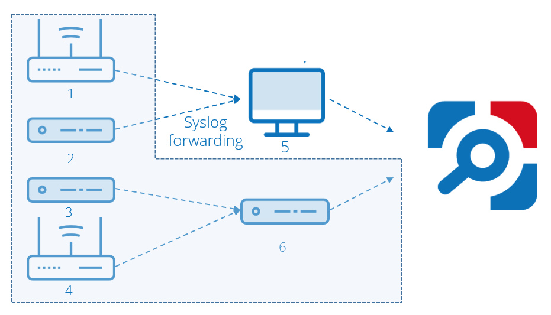
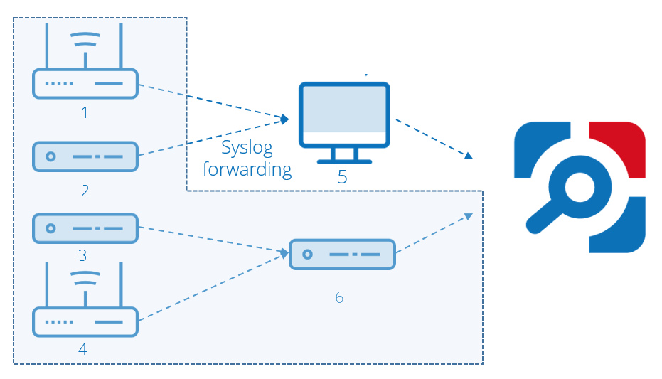

How to count the number of your network devices in your configuration?
The licensing does not depend on your Syslog forwarding configuration. In the example below, Netwrix Auditor collects audit data from five devices, one of them (6) also serving as a relay:

The computer (5) does not send any data, so it does not count for a licensed object. Therefore, for this example configuration, purchase Netwrix Auditor license for five network devices. Original KB Article 2122
The licensing does not depend on your Syslog forwarding configuration. In the example below, Netwrix Auditor collects audit data from five devices, one of them (6) also serving as a relay:

The computer (5) does not send any data, so it does not count for a licensed object. Therefore, for this example configuration, purchase Netwrix Auditor license for five network devices. Original KB Article 2122